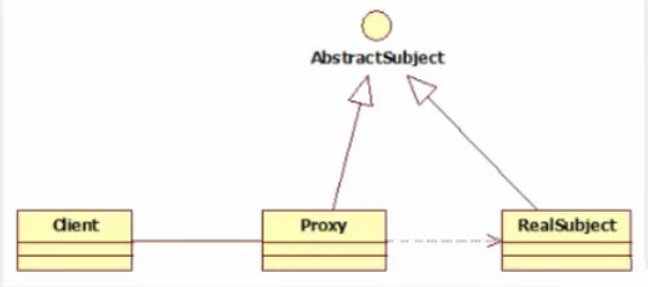
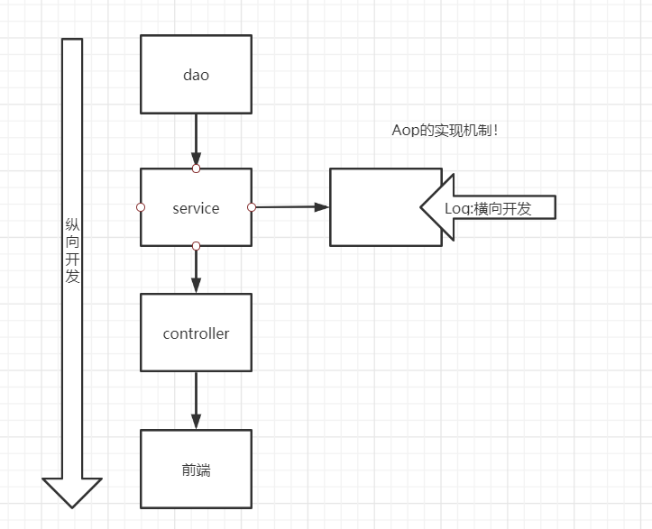
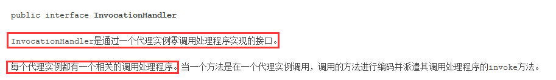
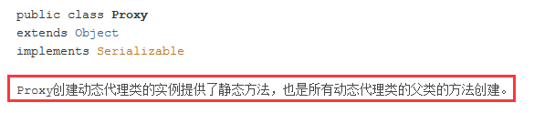
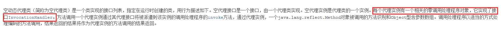
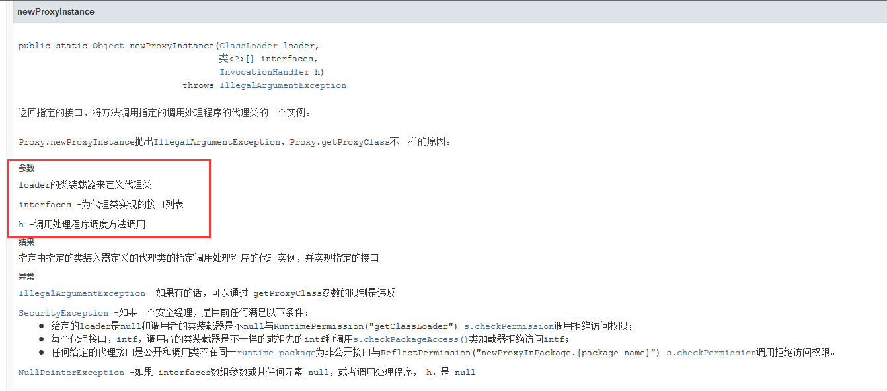

代理模式
AOP的底层机制就是动态代理！
代理模式：
- 静态代理
- 动态代理
学习aop之前 ,先了解一下代理模式！

静态代理
静态代理角色分析
抽象角色 : 一般使用接口或者抽象类来实现
真实角色 : 被代理的角色
代理角色 : 代理真实角色 ; 代理真实角色后 , 一般会做一些附属的操作 .
客户 : 使用代理角色来进行一些操作 .
代码实现
Rent . java 即抽象角色
//抽象角色：租房
public interface Rent {
public void rent();
}
Host . java 即真实角色
//真实角色: 房东，房东要出租房子
public class Host implements Rent{
public void rent() {
System.out.println("房屋出租");
}
}
Proxy . java 即代理角色
//代理角色：中介
public class Proxy implements Rent {
private Host host;
public Proxy() { }
public Proxy(Host host) {
this.host = host;
}
//租房
public void rent(){
seeHouse();
host.rent();
fare();
}
//看房
public void seeHouse(){
System.out.println("带房客看房");
}
//收中介费
public void fare(){
System.out.println("收中介费");
}
}
Client . java 即客户
//客户类，一般客户都会去找代理！
public class Client {
public static void main(String[] args) {
//房东要租房
Host host = new Host();
//中介帮助房东
Proxy proxy = new Proxy(host);
//你去找中介！
proxy.rent();
}
}
分析：在这个过程中，你直接接触的就是中介，就如同现实生活中的样子，你看不到房东，但是你依旧租到了房东的房子通过代理，这就是所谓的代理模式，程序源自于生活，所以学编程的人，一般能够更加抽象的看待生活中发生的事情。
静态代理的好处:
- 可以使得我们的真实角色更加纯粹 . 不再去关注一些公共的事情 .
- 公共的业务由代理来完成 . 实现了业务的分工 ,
- 公共业务发生扩展时变得更加集中和方便 .
缺点 :
- 类多了 , 多了代理类 , 工作量变大了 . 开发效率降低 .
想要静态代理的好处，又不想要静态代理的缺点，所以 , 就有了动态代理 !
静态代理再理解
步骤：
1、创建一个抽象角色，比如咋们平时做的用户业务，抽象起来就是增删改查！
//抽象角色：增删改查业务
public interface UserService {
void add();
void delete();
void update();
void query();
}
2、我们需要一个真实对象来完成这些增删改查操作
//真实对象，完成增删改查操作的人
public class UserServiceImpl implements UserService {
public void add() {
System.out.println("增加了一个用户");
}
public void delete() {
System.out.println("删除了一个用户");
}
public void update() {
System.out.println("更新了一个用户");
}
public void query() {
System.out.println("查询了一个用户");
}
}
3、需求来了，现在我们需要增加一个日志功能，怎么实现！
- 思路1 ：在实现类上增加代码 【麻烦！】
- 思路2：使用代理来做，能够不改变原来的业务情况下，实现此功能就是最好的了！
4、设置一个代理类来处理日志！代理角色
//代理角色，在这里面增加日志的实现
public class UserServiceProxy implements UserService {
private UserServiceImpl userService;
public void setUserService(UserServiceImpl userService) {
this.userService = userService;
}
public void add() {
log("add");
userService.add();
}
public void delete() {
log("delete");
userService.delete();
}
public void update() {
log("update");
userService.update();
}
public void query() {
log("query");
userService.query();
}
public void log(String msg){
System.out.println("执行了"+msg+"方法");
}
}
5、测试访问类：
public class Client {
public static void main(String[] args) {
//真实业务
UserServiceImpl userService = new UserServiceImpl();
//代理类
UserServiceProxy proxy = new UserServiceProxy();
//使用代理类实现日志功能！
proxy.setUserService(userService);
proxy.add();
}
}
AOP：纵向开发，横向开发

动态代理
动态代理的角色和静态代理的一样 .
动态代理的代理类是动态生成的 . 静态代理的代理类是我们提前写好的
动态代理分为两类 : 一类是基于接口动态代理 , 一类是基于类的动态代理
- 基于接口的动态代理——JDK动态代理
- 基于类的动态代理—cglib
- 现在用的比较多的是 javasist 来生成动态代理 . 百度一下javasist
- 这里使用JDK的原生代码来实现，其余的道理都是一样的！、
JDK的动态代理需要了解两个类
核心 : InvocationHandler 和 Proxy ， 打开JDK帮助文档看看
【InvocationHandler：调用处理程序】

Object invoke(Object proxy, 方法 method, Object[] args)；
//参数
//proxy - 调用该方法的代理实例
//method -所述方法对应于调用代理实例上的接口方法的实例。方法对象的声明类将是该方法声明的接口，它可以是代理类继承该方法的代理接口的超级接口。
//args -包含的方法调用传递代理实例的参数值的对象的阵列，或null如果接口方法没有参数。原始类型的参数包含在适当的原始包装器类的实例中，例如java.lang.Integer或java.lang.Boolean 。
【Proxy : 代理】



//生成代理类
public Object getProxy(){
return Proxy.newProxyInstance(this.getClass().getClassLoader(),
rent.getClass().getInterfaces(),this);
}
代码实现
抽象角色和真实角色和之前的一样！
Rent . java 即抽象角色
//抽象角色：租房
public interface Rent {
public void rent();
}
Host . java 即真实角色
//真实角色: 房东，房东要出租房子
public class Host implements Rent{
public void rent() {
System.out.println("房屋出租");
}
}
ProxyInvocationHandler. java 即代理角色
public class ProxyInvocationHandler implements InvocationHandler {
private Rent rent;
public void setRent(Rent rent) {
this.rent = rent;
}
//生成代理类，重点是第二个参数，获取要代理的抽象角色！之前都是一个角色，现在可以代理一类角色
public Object getProxy(){
return Proxy.newProxyInstance(this.getClass().getClassLoader(),
rent.getClass().getInterfaces(),this);
}
// proxy : 代理类 method : 代理类的调用处理程序的方法对象.
// 处理代理实例上的方法调用并返回结果
@Override
public Object invoke(Object proxy, Method method, Object[] args) throws Throwable {
seeHouse();
//核心：本质利用反射实现！
Object result = method.invoke(rent, args);
fare();
return result;
}
//看房
public void seeHouse(){
System.out.println("带房客看房");
}
//收中介费
public void fare(){
System.out.println("收中介费");
}
}
Client . java
//租客
public class Client {
public static void main(String[] args) {
//真实角色
Host host = new Host();
//代理实例的调用处理程序
ProxyInvocationHandler pih = new ProxyInvocationHandler();
pih.setRent(host); //将真实角色放置进去！
Rent proxy = (Rent)pih.getProxy(); //动态生成对应的代理类！
proxy.rent();
}
}
核心：一个动态代理 , 一般代理某一类业务 , 一个动态代理可以代理多个类，代理的是接口！
深化理解
使用动态代理实现代理我们后面写的UserService！
也可以编写一个通用的动态代理实现的类！所有的代理对象设置为Object即可！
public class ProxyInvocationHandler implements InvocationHandler {
private Object target;
public void setTarget(Object target) {
this.target = target;
}
//生成代理类
public Object getProxy(){
return Proxy.newProxyInstance(this.getClass().getClassLoader(),
target.getClass().getInterfaces(),this);
}
// proxy : 代理类
// method : 代理类的调用处理程序的方法对象.
public Object invoke(Object proxy, Method method, Object[] args) throws Throwable {
log(method.getName());
Object result = method.invoke(target, args);
return result;
}
public void log(String methodName){
System.out.println("执行了"+methodName+"方法");
}
}
测试！
public class Test {
public static void main(String[] args) {
//真实对象
UserServiceImpl userService = new UserServiceImpl();
//代理对象的调用处理程序
ProxyInvocationHandler pih = new ProxyInvocationHandler();
pih.setTarget(userService); //设置要代理的对象
UserService proxy = (UserService)pih.getProxy(); //动态生成代理类！
proxy.delete();
}
}
测试，增删改查，查看结果！
动态代理的好处
静态代理有的它都有，静态代理没有的，它也有！
- 可以使得我们的真实角色更加纯粹 . 不再去关注一些公共的事情 .
- 公共的业务由代理来完成 . 实现了业务的分工 ,
- 公共业务发生扩展时变得更加集中和方便 .
- 一个动态代理 , 一般代理某一类业务
- 一个动态代理可以代理多个类，代理的是接口！
转载请注明来源，欢迎对文章中的引用来源进行考证，欢迎指出任何有错误或不够清晰的表达。可以在下面评论区评论，也可以邮件至 1589631311@qq.com